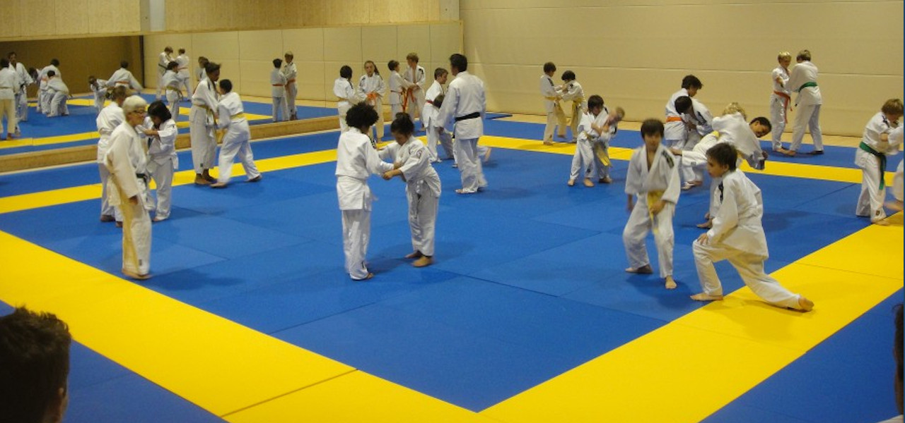
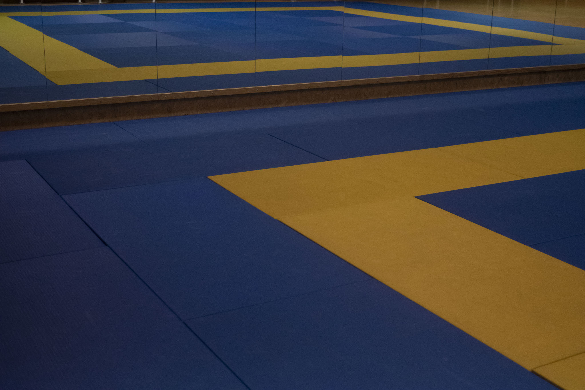
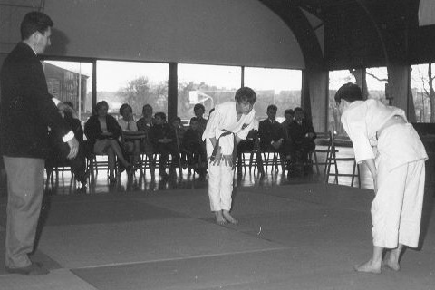

5 tot ±10 jaar
Groep 1
18:00 — 19:00

Recreatief en competitief judo in een warme clubsfeer. 4 gratis proeflessen, het hele jaar door.
Wanneer
Maandag & donderdag
Vanaf 18u — drie leeftijdsgroepen
Waar
Sporthal Rozebroeken
Victor Braeckmanlaan 180, 9040 Gent
Trainingen
Elke maandag- en donderdagavond, in onze 191 m² grote dojo.
5 tot ±10 jaar
18:00 — 19:00
±10 tot ±14 jaar
19:00 — 20:15

Vanaf ±14 jaar
20:15 — 21:45

Sinds 1965
Generaties judoka's groeiden hier op tot Belgisch kampioen, jeugdtrainer of vertrouwde clubvriend. De cultuur die zij meebrachten, geven we elke training door.
Lees onze geschiedenisGratis proeven
Twijfel je of judo iets voor jou is? Iedere beginner mag vier lessen gratis meedoen, zonder vooraf in te schrijven of een judopak te kopen.
Onze tatami
191 m² om vrij te bewegen.
Locatie
We trainen in een ruime, lichte zaal. Vlot bereikbaar met de fiets, te voet, met de auto en het openbaar vervoer.
Sporthal Rozebroeken
Victor Braeckmanlaan 180
9040 Sint-Amandsberg (Gent)
Kom op een maandag- of donderdagavond gewoon binnen. Geen afspraak, geen voorbereiding nodig.